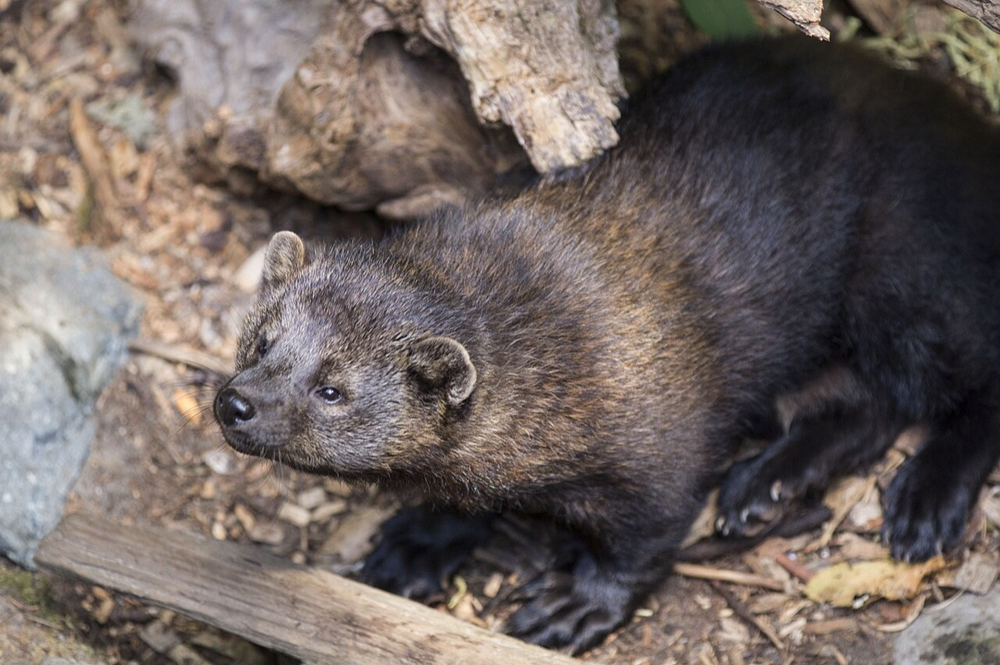

Fisher
Martes pennanti
- Also called
- Fishercat, Pekan, Wejack
- Kind
- mammal · Mustelidae
- Native to Vermont
- yes
- Legal status
- Common throughout Vermont; trapping permitted in a heavily regulated season each year (dates and limits not on the species page) (checked 2026-10-30)
- Look-alikes
- Pine marten; Mink (relatives in the weasel family)
Pictures

Names
Fisher (also fishercat, pekan, wejack), a weasel-family relative of the pine marten and mink. A relatively small, forest-dwelling carnivore.
Range and habitat
Common throughout Vermont, in virtually every town; reintroduction was successful. Mainly coniferous or mixed hardwood forest, especially uneven-aged forest with snags and many fallen trees, which give denning sites and more prey. Large tracts of continuous overhead cover matter; canopy reduces snow depth, helping the animal move and forage. Temporary dens are under logs, root wads, brush piles, hollow trees or beneath snow.
How to identify (by season; look-alikes and the key difference)
The species page does not describe the animal or its tracks. It is active day and night, with peaks in early morning and late evening.
Through the year
Dates are typical for Vermont and shift with elevation and year; "approximate" means the source gave a season and the dates are a translation of it.
| When | What | Look for | What to do | Dates |
|---|---|---|---|---|
| Mar 1 to Mar 31 | young (watch) | A litter of one to four kits is born every March in a tree-cavity den. This is hidden; it is a reason to keep large cavity trees. | - | stated |
| Mar 15 to May 31 | sign (avoid) | Fishers are most active in spring and fall: limit outdoor cats' activity in the late evening and early dawn. | - | approximate |
| Mar 25 to Apr 30 | breeding (watch) | Breeding usually occurs from late March through April; implantation is delayed about 10 to 11 months, then gestation is 30 to 60 days. | - | stated |
| Sep 15 to Nov 30 | sign (avoid) | Fishers are most active in spring and fall: limit outdoor cats' activity in the late evening and early dawn. | - | approximate |
Signs on the land (tracks, scat, browse, nests, holes, calls)
Not described on the species page. Kits are born in a tree-cavity den; temporary dens are under logs, root wads, brush piles and hollow trees.
Role in the forest (what it eats, what eats it, what it needs)
A predator; the Landowner's Guide lists the fisher among the animals that prey on the snowshoe hare (Snowshoe Hare). Kits are fully furred within 18 days, their eyes open at 53 days and they are weaned at about four months; young begin leaving the mother at five months.
What helps it thrive (light, soil, shelter, food and the trees it uses)
The sources read give no habitat practices for the fisher. The department's species page names the features fishers favor: continuous overhead cover, uneven-aged forest, snags and fallen trees, and cavity trees. The Guide has no fisher chapter. What helps it, as far as the sources go, is to keep large intact forest with that structure and to keep a supply of prey: the Guide lists the fisher among the predators of the snowshoe hare (Snowshoe Hare). The snag and den-tree targets in Pileated Woodpecker serve it too.
Managing for it (habitat practices) and living with it (conflicts and damage)
- The page names the habitat features fishers favor (continuous overhead cover, uneven-aged forest, snags and fallen trees, cavity trees) and gives no specific landowner steps. Keeping snags and den trees (Pileated Woodpecker has the department's targets) and downed wood serves it.
- Conflict: cat owners should limit outdoor cats at late evening and dawn in spring and fall.
- The department monitors fishers each year by trapper mail surveys and examination of age and sex structure, and aims to conserve them while providing ways to view, harvest and use them.
Legal status
Trapping is permitted during a heavily regulated season each year; season dates, bag limits and other rules are not on the species page.
Sources
- Vermont Fish & Wildlife Department, fisher: https://vtfishandwildlife.com/learn-more/vermont-critters/mammals/fisher (read 2026-10-30)
What this page is based on
Kind of source: primary-agency (Vermont Fish & Wildlife species page, read as a summary)
What was read: The Vermont Fish & Wildlife fisher page (summarizing fetch, 2026-10-30). The page gives no appearance beyond 'relatively small, forest dwelling carnivore', no tracks or sign, no dispersal month, no season dates and no landowner habitat steps, and no last-updated date; the 'spring and fall' cat caution is translated into the two windows. The Landowner's Guide has no fisher chapter.
Last checked: 2026-10-30
Vermont land and forest reference, built 2026-11-05. Rules and dates here are summaries, not legal advice; dates shift with elevation and year. Photo and recording credits · Note: _reference/US-VT/Species/Fisher.md